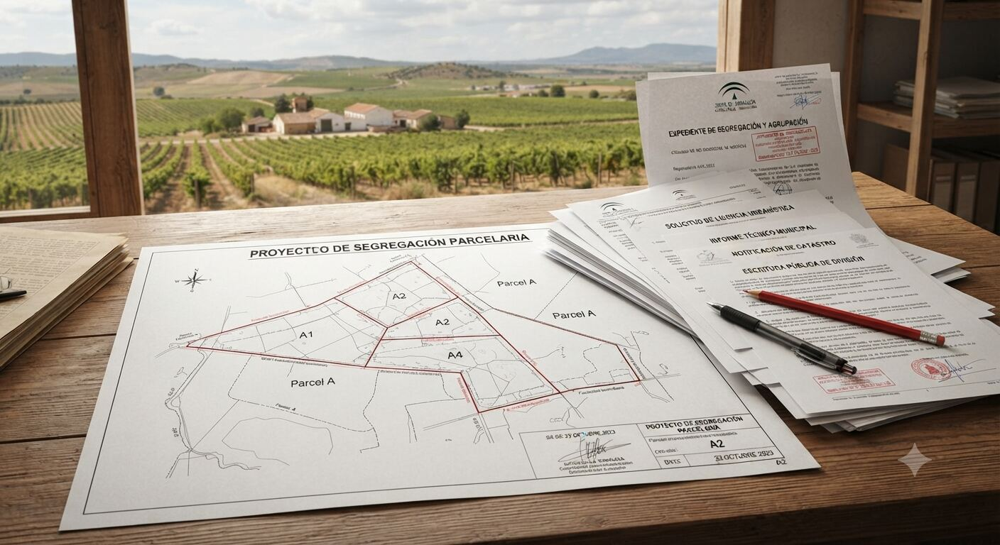
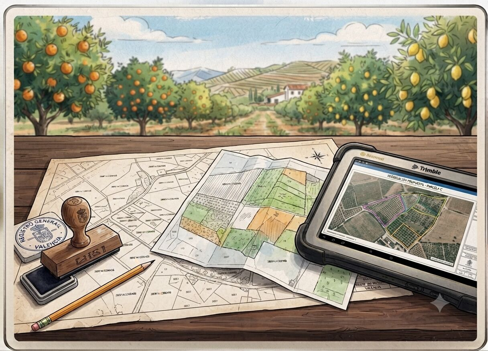

Segregación parcelaria y trámites agrarios
Herencias con varios titulares, parcelas que hay que dividir o agrupar, edificaciones construidas sin proyecto: ordenamos la situación administrativa de tu finca.


Por qué este servicio es cada vez más necesario
Muchas fincas de la Comunitat Valenciana arrastran situaciones sin resolver: parcelas heredadas entre varios propietarios, construcciones agrícolas levantadas hace años sin proyecto ni licencia, o linderos que ya no coinciden con la realidad tras la DANA de 2024, que desplazó tierra, dañó acequias y borró referencias físicas en muchas zonas de huerta y secano.
A esto se suma una tramitación de ayudas y PAC cada vez más exigente en cuanto a documentación técnica, lo que hace que cualquier irregularidad registral o catastral pueda bloquear una solicitud.
Qué incluye el servicio
- Segregaciones y agrupaciones parcelarias, con estudio previo de viabilidad según la Unidad Mínima de Cultivo aplicable.
- Deslindes y levantamientos topográficos para actualizar linderos afectados por erosión, riadas o construcciones antiguas.
- Legalización de edificaciones rurales existentes (almacenes, casetas de aperos, balsas) sin proyecto original.
- Certificados de explotación agraria y documentación técnica para trámites notariales o de herencia.
- Preparación de documentación técnica para solicitudes de ayudas, PAC y subvenciones de la Generalitat Valenciana.
- Asesoramiento en comunidades de regantes y titularidad compartida de parcelas.
Valoraciones y peritaciones agrarias
Además de la gestión parcelaria, elaboramos tasaciones e informes periciales sobre fincas, cultivos y daños agrarios, con validez para procesos legales, de seguros o financieros:
- Valoración de fincas rústicas para compraventa, herencia o reparto entre herederos.
- Peritaciones de daños en cultivos por sequía, pedrisco, plagas u otros siniestros, de cara a seguros agrarios.
- Tasación de árboles, plantaciones y mejoras agrarias.
- Informes periciales para procesos judiciales, expropiaciones o discrepancias entre linderos.
Cómo se trabaja
Se parte de una revisión documental (catastro, registro, cartografía SIGPAC) y una visita a la parcela para contrastar la realidad física con los datos oficiales. A partir de ahí se redacta el proyecto o informe técnico necesario para la administración correspondiente, y se acompaña la tramitación hasta su resolución.
🤖 Primer filtro con IA
Antes de encargar el estudio puedes hacer una comprobación orientativa de si una segregación sería viable según superficie, con nuestra calculadora de referencia.
Probar calculadora de segregaciónPreguntas frecuentes
¿Qué es la Unidad Mínima de Cultivo y cómo afecta a una segregación?
Es la superficie mínima que la normativa autonómica exige para poder dividir una finca rústica sin autorización especial. Si la parcela resultante no alcanza esa superficie, la división puede no ser viable salvo excepciones previstas por la ley. Se revisa caso por caso antes de iniciar cualquier trámite.
¿Puedo legalizar una construcción agrícola que ya existe sin proyecto original?
En muchos casos sí, mediante declaración responsable o licencia según el tipo de construcción y el suelo en el que se ubique. Requiere levantamiento del estado actual y, a veces, adaptación a la normativa vigente. La viabilidad se valora tras una revisión documental y una visita a la parcela.
¿Cuánto tarda una segregación parcelaria?
Depende del ayuntamiento o registro implicado y de si hay incidencias catastrales previas, pero suele ir de varias semanas a unos meses. Se puede dar una estimación más ajustada tras revisar la documentación de la parcela.
¿Necesito una peritación si tengo un seguro agrario y he sufrido daños por pedrisco o sequía?
Sí, la mayoría de aseguradoras exigen un informe pericial técnico que cuantifique el daño real en el cultivo para tramitar la indemnización. Podemos elaborar ese informe con validez para el proceso.
¿Cuánto cuesta segregar una finca en la Comunitat Valenciana?
El coste varía según el ayuntamiento, las tasas aplicables y la complejidad técnica del caso (topografía, catastro, número de parcelas resultantes), por lo que no hay una tarifa única. Tras revisar la documentación de tu finca puedo darte un presupuesto cerrado antes de empezar.